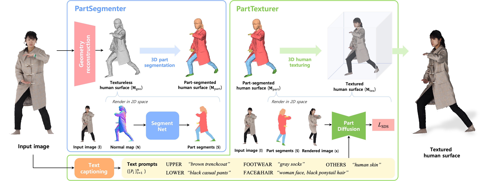
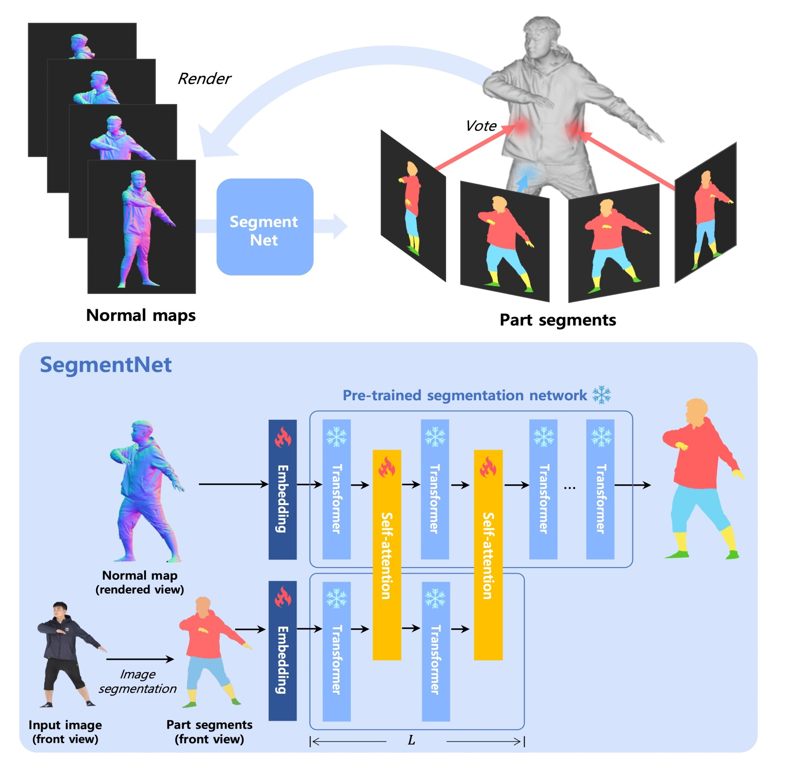
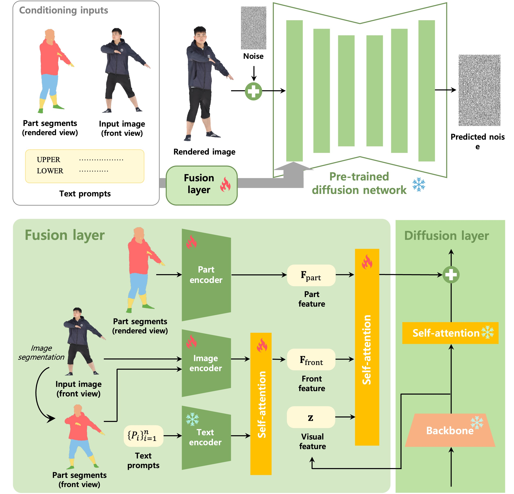
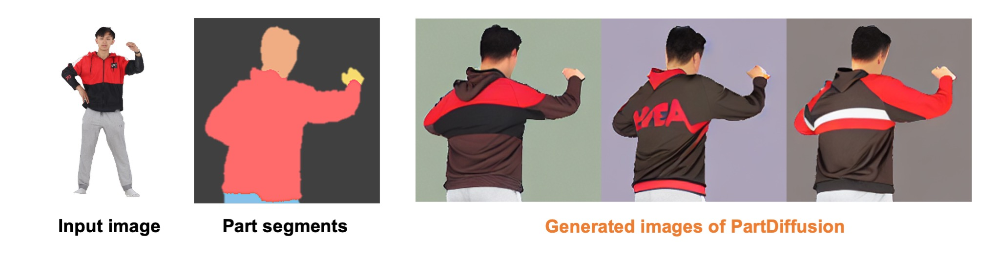
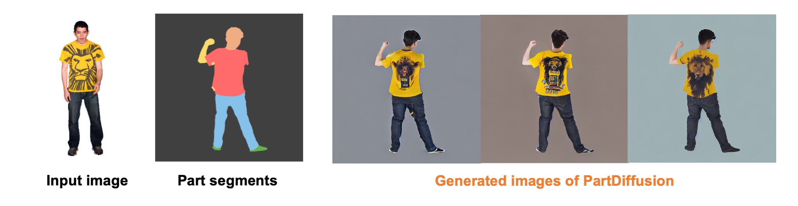
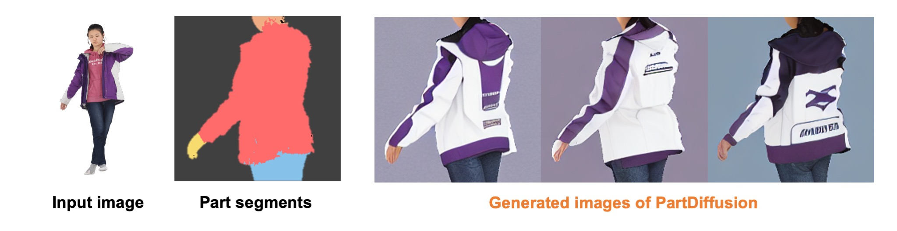
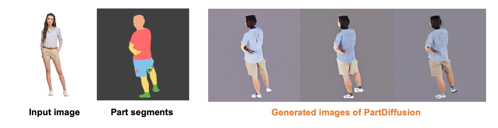
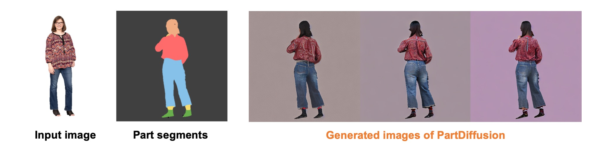
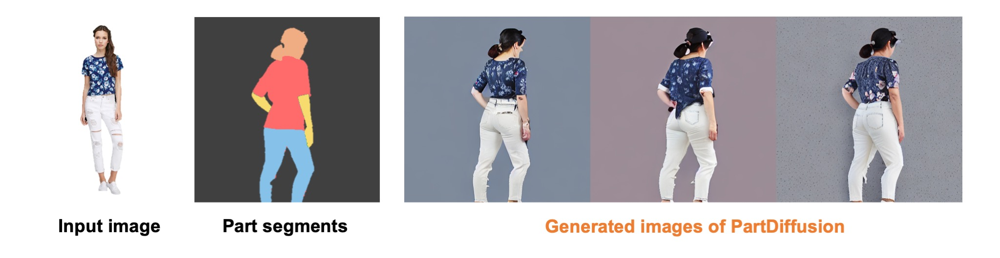

The misaligned human texture across different human parts is one of the main limitations of existing 3D human reconstruction methods. Each human part, such as a jacket or pants, should maintain a distinct texture without blending into others. The structural coherence of human parts serves as a crucial cue to infer human textures in the invisible regions of a single image. However, most existing 3D human reconstruction methods do not explicitly exploit such part segmentation priors, leading to misaligned textures in their reconstructions.
In this regard, we present PARTE, which utilizes 3D human part information as a key guide to reconstruct 3D human textures. First, to infer 3D human part information from a single image, we propose a 3D part segmentation module (PartSegmenter) that initially reconstructs a textureless human surface and predicts human part labels based on the textureless surface. Second, to incorporate part information into texture reconstruction, we introduce a part-guided texturing module (PartTexturer), which acquires prior knowledge from a pre-trained image generation network on texture alignment of human parts. Extensive experiments demonstrate that our framework achieves state-of-the-art quality in 3D human reconstruction.









@article{nam2025parte,
author = {Nam, Hyeongjin and Kim, Donghwan and Moon, Gyeongsik and Lee, Kyoung Mu},
title = {{PARTE}: Part-Guided Texturing for 3D Human Reconstruction from a Single Image},
journal = {ICCV},
year = {2025},
}